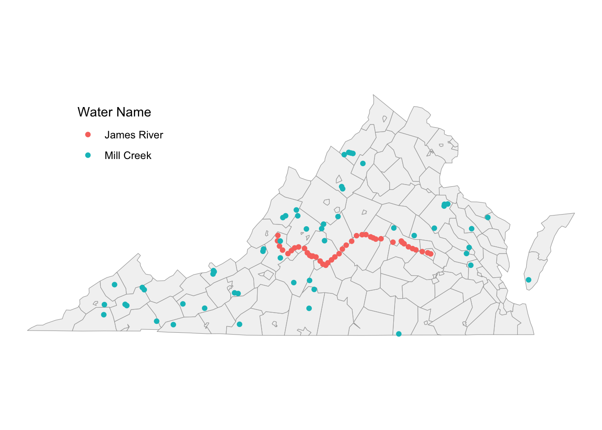
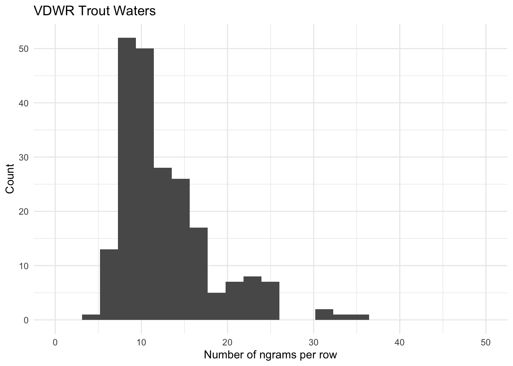

Water bodies that are included in the Virginia Department of Wildlife Recreation (VDWR) trout stocking program can be browsed on an interactive map, however there doesn’t appear to be a simple way for the average user to download the location data. For this reason, we explore some methods for determining these locations in the sections below.
The no-tech solution to this problem is to simply brute-force our way through the trout water locations by manually searching for each individual location. It’s frustrating to know that the locations are definitely recorded in a database somewhere, just not easily accessible to me personally, so I literally pasted each “trout water” into the search bar on the interactive map, navigated to the appropriate search result, dropped a pin on the location, and copied the relevant coordinates.
As painful as this was, it was manageable (it took about 3-ish hours), and very illuminating. For example, I found a handful of inconsistencies like misspellings, alternative names, or missing waterways. In some cases I resorted to a manual google-maps search to help narrow the field and made a judgement call as to the probable location of some waterway. In all cases I entered a discrete point, even though many of the locations are rivers and streams and trout stocking is probably carried out at a variety of locations along the waterway. In one case I wasn’t able to find the location at all because the name, “Forest Service Office Youth Ponds” was very much ambiguous and I couldn’t find where the Forest Service Office is located (apparently even Google doesn’t know!); in that case I used the center of the respective county.
The Virginia Department of Environmental Quality (VDEQ) maintains an up-to-date collection of datasets related to rivers/streams, and lakes/reservoirs, plus a variety of other features. Combining the rivers/streams and lakes/reservoirs data yields 7,135 unique bodies of water, or 4,277 uniquely named bodies of water. What’s the difference? Many of the bodies of water are divided into multiple segments and some are frequently-used names. For example, the James River has 41 sections outlined in the VDEQ data, and Mill Creek has 41. If we look at the geographic distribution of the respective points, the difference becomes clear,

To a large degree these multiplicity issues can be resolved by filtering the data by county (whereas counties aren’t explicitly listed in the VDEQ data, we derive these from shapes available from the Census Bureau). Rivers, however, may require an extra step towards disambiguation. Nevertheless, it’s worth noting that around 75% of the names have only a single entry, so these problems shouldn’t be too pervasive.
Note: after carrying out 90% of this analysis, I discovered that VDEQ has two additional datasets that are specifically labeled as Trout Rivers & Streams and Trout Lakes & Reservoirs. We will revisit these datasets later.
Comparing water bodies between these two datasets is nontrivial. As noted in the section above describing the brute-force approach, there are several cases where misspellings, alternative spellings, ambiguous names, or missing data come into play. Add to this the multiplicities highlighted above for the VDEQ data. With all of this in mind, the strategy here will be to formulate a set of logical rules that will help us come up with a “best guess” as to which trout waters denoted in the VDWR data correspond to which water bodies in the VDEQ data. The initial procedure will look like this,
CODE
#
# Pairwise comparisons
#
t0 <- Sys.time()
d <- lapply(1:nrow(df.trt), function(i) {
df.deq %>%
filter(county == df.trt$county[i]) %>%
mutate(waterbody1 = df.trt$waterbody1[i],
jc = stringdist::stringdist(waterbody1, WATER_NAME, method="jaccard",q=3),
id = df.trt$id[i]) %>%
filter(jc<0.50) %>%
arrange(id, jc) %>%
dplyr::select(id, waterbody1, ID305B, WATER_NAME, county, jc, source, coord)
})
df.cnd1 <- do.call(rbind, d)
t1 <- Sys.time()
DT_PR <- t1-t0The result is a list of candidate pairs that will be used later in the Adjudication step. In the table below, a Jaccard score of zero means the names are identical. Some things worth noting here, which will be discussed in greater depth later, 1) some cases return a single result with exact string match, 2) some cases return multiple results with exact string matches, 3) some cases return a mixture of exact and inexact string matches 4) some cases return only inexact string matches, and 5) some trout waters do not return any candidate pairs. The adjudication step will need to account for each of these scenarios. Some of these scenarios are evident in the sample printed below,
| id | Trout Water | VDEQ water | Jaccard |
|---|---|---|---|
| trt-001 | Spring Run | Spring Run | 0.00 |
| trt-001 | Spring Run | Long Spring Run | 0.33 |
| trt-005 | German River | German River | 0.00 |
| trt-006 | Irish Creek | Irish Creek | 0.00 |
| trt-006 | Irish Creek | Irish Creek | 0.00 |
| trt-007 | South Fork Holston River | South Fork Holston River | 0.00 |
| trt-007 | South Fork Holston River | South Fork Holston River | 0.00 |
| trt-007 | South Fork Holston River | South Fork Holston River | 0.00 |
| trt-007 | South Fork Holston River | North Fork Holston River | 0.24 |
| trt-007 | South Fork Holston River | North Fork Holston River | 0.24 |
Locality-sensitive hashing is a technique that can be used to reduce the search space in cases where pairwise comparisons between datasets may become intractable. The methodology, described here, takes an approximative approach that mimics the jaccard similarity. The data we are working with here don’t quite meet the threshold of intractability, however it is interesting to go through the mechanics of LSH anyway.
It’s worth noting, however, that LSH is typically discussed within the context of finding similar/duplicate items within a large document corpus, whereas the problem being addressed here is specifically related to the comparison of two different datasets (this may or may not be strictly true; it’s possible that this is a limitation of the specific implementation used here, or it might be related to my own lack of familiarity with the implementation).
The overarching goal here is to use LSH to create a list of candidate pairs. Most of the necessary steps are carried out with the textreuse package, however since the implementation appears to be designed for use with longer documents, we will carry out some pre-processing steps to tokenize text by characters instead of the default, which is by word.
CODE
# Pre-processing: VDEQ data
df.deq2 <- df.deq %>%
mutate(ngrams = tokenizers::tokenize_character_shingles(WATER_NAME, n=3, # tokenize by ngram
strip_non_alphanum=FALSE,
simplify=TRUE),
len = purrr::map_int(ngrams, length), # number of tokens
txt_tokens = purrr::map_chr(ngrams, str_c,collapse=" ")) # prep for minhash
# Pre-processing: VDWR data
df.trt2 <- df.trt %>%
mutate(ngrams = tokenizers::tokenize_character_shingles(waterbody1, n=3,
strip_non_alphanum=FALSE,
simplify=TRUE),
len = purrr::map_int(ngrams, length),
txt_tokens = purrr::map_chr(ngrams, str_c, collapse=" "))In the present case the water body names are tokenized into ngrams, where n=3. It is useful to take a look at the number of ngrams per name for each dataset,
 The histograms show an interesting tri-modal feature, most evident in the VDEQ data. Closer inspection reveals that most of the names in the VDEQ data with greater than 30 ngrams follow a pattern like “Unnamed tributary to…”. The peak around 20 mostly consists of more complex names in both datasets, such as those specifying “North Fork..” or “South Fork…”, or something like “Goose Creek/Crooked Run/Gap Run”.
The minhashing workflow here is based largely on the textreuse package vignette. We start by generating a minhash function and using that to create a document corpus containing all of the minhashed ngrams. The minhash function converts a collection of tokens into n randomly selected hashes. In the present dataset, there are 799 unique ngrams derived from the trout waters, and 4,804 from the VDEQ water body names. These are mapped to 240 hashes.
CODE
# Create minhash function
minhash <- textreuse::minhash_generator(n=240, seed=1234)The document corpus is created, which consists of all names from both datasets.
CODE
# Create a named vector of tokens for each row
vec_tokens <- c(df.deq2$txt_tokens, df.trt2$txt_tokens)
names(vec_tokens) <- c(df.deq2$ID305B, df.trt2$id)
# Generate corpus
t0 <- Sys.time()
corpus <- textreuse::TextReuseCorpus(text = vec_tokens, tokenizer = tokenizers::tokenize_ngrams, n = 3,
minhash_func = minhash, keep_tokens = TRUE,
progress = FALSE, simplify=TRUE)
t1 <- Sys.time()
DT_LS1 <- t1-t0Locality-sensitive hashing can now be carried out on the corpus. The only remaining parameter is the number of bands to use in the computation. The approximate threshold for jaccard similarity used to create the candidate pairs depends on this value. In the present case \(b=40\) is used since it leads to an approximate threshold of around 0.5.
CODE
t0 <- Sys.time()
buckets_040 <- lsh(corpus, bands = 40, progress = FALSE)
candidates_040 <- lsh_candidates(buckets_040) %>% mutate(bands=40)
t1 <- Sys.time()
DT_LS2 <- t1-t0The result is a list of candidate pairs, nominally, pairs which will yield a jaccard similarity less than the theshold value implied by the choice of \(b\). With a little bit of post-processing one can generate a result analogous to what was produced above,
CODE
t0 <- Sys.time()
df.cnd2 <- candidates_040 %>%
filter(a %in% df.trt2$id) %>%
rename(id=a, ID305B=b) %>%
left_join(df.trt %>% dplyr::select(id, waterbody1, county), by=c("id")) %>%
left_join(df.deq %>% dplyr::select(ID305B, WATER_NAME, source, coord, county2=county), by=c("ID305B")) %>%
filter(county==county2) %>%
mutate(jc = stringdist::stringdist(waterbody1, WATER_NAME, method="jaccard",q=3)) %>%
arrange(id, jc) %>%
dplyr::select(id, waterbody1, ID305B, WATER_NAME, county, jc, source, coord)
t1 <- Sys.time()
DT_LS3 <- t1-t0
DT_LS <- DT_LS1 + DT_LS2 + DT_LS3| id | Trout Water | VDEQ water | Jaccard |
|---|---|---|---|
| trt-001 | Spring Run | Spring Run | 0.00 |
| trt-001 | Spring Run | Long Spring Run | 0.33 |
| trt-003 | Slate Lick Lake | Slate Lick Branch | 0.53 |
| trt-003 | Slate Lick Lake | Slate Lick Branch | 0.53 |
| trt-004 | Slate Lick Run | Slate Lick Branch | 0.50 |
| trt-004 | Slate Lick Run | Slate Lick Branch | 0.50 |
| trt-004 | Slate Lick Run | Spruce Lick Run | 0.53 |
| trt-005 | German River | German River | 0.00 |
| trt-006 | Irish Creek | Irish Creek | 0.00 |
| trt-006 | Irish Creek | Irish Creek | 0.00 |
In principle, the Pairwise and LSH methods outlined above do more or less the same thing, so it is interesting to do a quick comparison of the results.
First, ignoring some of the pre-processing steps, the Pairwise method took about 3 s to run, whereas the LSH method took around 30 s to generate the corpus (6s), compute locality-sensitive hashes (21s), and carry out some light post-processing (0.2s). Note that this not a completely fair comparison, and there may be more optimization to be carried out. For example, the pairwise method doesn’t compare all records with all other records; instead it compares each record from the trout data to all records in the VDEQ data that are in the same county. In effect, we are carrying out a blocking process prior to the comparing the datasets. In the LSH method detailed above this blocking step is carried out as part of the post-processing. Not only that, but the corpus doesn’t distinguish between datasets, so the LSH method is intrinsically comparing each record with all other records in both datasets.
Next, it is worth comparing the output of each method,
Notice that the Jaccard similarity shows a sharp cutoff at 0.5 for the Pairwise method, but the boundary is fuzzier with LSH. This is a consequence of the latter being an approximate method. It may be possible to refine the LSH parameters in a way so as to create a sharper cutoff. Also, the distribution of similarity scores is different for the two methods as the value becomes larger, however the number of exact matches is identical. This has to do with the probabilistic nature of LSH.
The candidate pairs identified above ideally represent the same waterways present in both datasets, however the reality is more complicated and nuanced. For example, as was briefly mentioned above, there are five possible outcomes for each candidate pair,
During the adjudication process the goal will be to assign a likelihood value to each proposed candidate pair. To do this, we will use Bayes Law,
\[ Pr(\theta | y) = \frac{Pr(y | \theta) Pr(\theta)}{Pr(y)} \] where,
The value for \(Pr(y | \theta)\) would nominally be determined from data. For example, if a subset of the candidate pairs were adjudicated manually or otherwise known a priori, this information could be used to derive an expression for the probability of similarity score \(y\), given a correct candidate pair. Technically, this information is available in the present case since the brute-force method was carried out above. However, this is not a typical scenario, so we will use this as a comparative method only. If no information is available then we will need to come up with a “best guess” as to the relationship. With this in mind, we assume that the likelihood drops off exponentially as a function of the similarity score, with the probability at \(sim=0.1\) exactly half that of \(sim=0.0\), and \(sim=0.2\) half that of \(sim=0.1\), and so on. In other words, we assume the relation, \(P = e^{-\lambda x}\), where \(\lambda = \frac{ln(2)}{t_{1/2}}\) and \(t_{1/2} = 0.1\),
The value for \(Pr(\theta)\) is the prior probability that the candidate pair is correct. This depends on the number of candidate pairs, plus the possibility that none of the candidate pairs are correct. Assuming a uniform distribution, we use \(\frac{1}{n+1}\), where \(n\) is the number of candidate pairs.
The normalization factor can be expanded to,
\[ Pr(y) = \sum_{\theta}{Pr(\theta) Pr(y | \theta)} \] This will be evaluated for each candidate pair determined for a given trout water, plus the possibility that none of the candidates are correct. Since there is no information as to the probability that none of the candidate pairs is correct, we are forced to come up with a “best guess”. Considering that the VDEQ dataset is supposed to be comprehensive, the likelihood that a given trout waterway is not present is likely very small. However, there is also the possibility that the waterway is present, but the name is sufficiently different that it is not offered as a candidate pair. Given these factors, we estimate that there is a 2% likelihood that the waterway is not represented as a candidate pair.
CODE
faker_frame <- function(n) {
data.frame(WATER_NAME = "None",
P_cn = 0.02,
P_pr = 1/(n+1))
}
bsn <- function(df) {
df %>%
mutate(P_cn = fctn(jc),
P_pr = 1/(nrow(df)+1)) %>%
bind_rows(faker_frame(nrow(df))) %>%
mutate(P_yy = sum(P_cn*P_pr),
P = P_cn*P_pr/P_yy)
}
df.adj1 <- df.cnd1 %>%
tidyr::nest(data=c(ID305B, WATER_NAME, source,coord, jc)) %>%
mutate(data = purrr::map(data,bsn)) %>%
tidyr::unnest(cols=c(data))
df.adj2 <- df.cnd2 %>%
tidyr::nest(data=c(ID305B, WATER_NAME, source,coord, jc)) %>%
mutate(data = purrr::map(data,bsn)) %>%
tidyr::unnest(cols=c(data))Combining all of this into Bayes Law gives normalized probability values for each candidate pair, plus an additional option that none are correct. A sample of the results is listed in the table below. Note that the probability sums to 1.0 for each trout water, although in some cases this appears not to be the case due to rounding carried out for display purposes.
| id | Trout Water | VDEQ water | Jaccard | Probability |
|---|---|---|---|---|
| trt-001 | Spring Run | Spring Run | 0.00 | 0.89 |
| trt-001 | Spring Run | Long Spring Run | 0.33 | 0.09 |
| trt-001 | Spring Run | None | NA | 0.02 |
| trt-005 | German River | German River | 0.00 | 0.98 |
| trt-005 | German River | None | NA | 0.02 |
| trt-006 | Irish Creek | Irish Creek | 0.00 | 0.50 |
| trt-006 | Irish Creek | Irish Creek | 0.00 | 0.50 |
| trt-006 | Irish Creek | None | NA | 0.01 |
| trt-007 | South Fork Holston River | South Fork Holston River | 0.00 | 0.23 |
| trt-007 | South Fork Holston River | South Fork Holston River | 0.00 | 0.23 |
A close inspection of the sample results listed in the table above doesn’t reveal anything overly surprising. For example, in the case of “Irish Creek” there were two exact string matches and each are assigned approximately a 50% chance of being correct, with a very small probability that none are correct. The results for “South Fork Holston River” are truncated in the table above, but there were 13 candidate pairs, 3 of which are exact string matches. The model gives a 68% chance that one of these exact matches are correct, and a 32% chance that one of the ten other candidate pairs are correct (plus a tiny chance that none are correct).
In cases where a single trout water yielded two or more string matches with exactly the same name, it is useful to take a step back and consider that this likely are, in fact, the same waterways. Recall the example above where the James River extended most of the way across the state, but it was divided into 41 individual segments. Given this, we can deal with the multiplicity problem by simply merging these data together. One way to check if this is reasonable is to aggregate by waterway, connect the dots between the candidate pairs, and compare with the waterway lines included in the original Rivers/Streams dataset,
CODE
# filter to just max prob
maxonly <- function(df) {df %>% filter(P == max(P))}
make_line <- function(lonlat) { lonlat %>% as.matrix() %>% sf::st_linestring() }
df.mx1 <- df.adj1 %>%
dplyr::select(id, waterbody1,ID305B, WATER_NAME, source,coord, jc,P) %>%
tidyr::nest(data=c(ID305B, WATER_NAME, source,coord, jc,P)) %>%
mutate(data = purrr::map(data, maxonly),
len = purrr::map_int(data,nrow)) %>%
tidyr::unnest(cols=c(data))
df.mx2 <- df.mx1 %>%
filter(len>1) %>%
group_by(id) %>%
summarise(m = sf::st_coordinates(coord)) %>%
arrange(id,m) %>%
tidyr::nest() %>%
mutate(ln = purrr::map(data, make_line) %>% sf::st_sfc(crs=EPSG_WGS84),
coord2 = ln %>% sf::st_transform(epsg_code) %>% sf::st_centroid() %>% sf::st_transform(EPSG_WGS84))
df.mx <- bind_rows(
df.mx1 %>%
filter(len==1) %>%
dplyr::select(-ID305B, -source),
df.mx1 %>%
filter(len>1) %>%
group_by(id, waterbody1, WATER_NAME) %>%
summarise(P=sum(P), jc=mean(jc), len=mean(len)) %>%
left_join(df.mx2 %>% dplyr::select(id, coord=coord2), by=c("id")))With a few exceptions, the derived lines (black) more or less trace along the VDEQ (blue) waterways (in the original dataset these are represented as lines). This implies that we can, in fact, combine identically-named waterways from the data.
| id | Trout Water | VDEQ Water | Probability |
|---|---|---|---|
| trt-001 | Spring Run | Spring Run | 0.89 |
| trt-005 | German River | German River | 0.98 |
| trt-013 | Upper Passage Creek | Passage Creek | 0.81 |
| trt-020 | Big Wilson Creek | Big Wilson Creek | 0.66 |
| trt-027 | Wilson Creek | Wilson Creek Upper | 0.35 |
| trt-029 | Peters Mill Creek | Peters Mill Run | 0.21 |
| trt-035 | McFalls Creek | McFalls Creek | 0.98 |
| trt-036 | Falls Hollow | Falls Hollow | 0.98 |
| trt-040 | Sugar Hollow Reservoir | Sugar Hollow Reservoir | 0.98 |
| trt-041 | Douthat Lake | Douthat Lake | 0.98 |
TODO: Compare results with “known” locations.
textreuse package here
tokenizers output with textreuse here